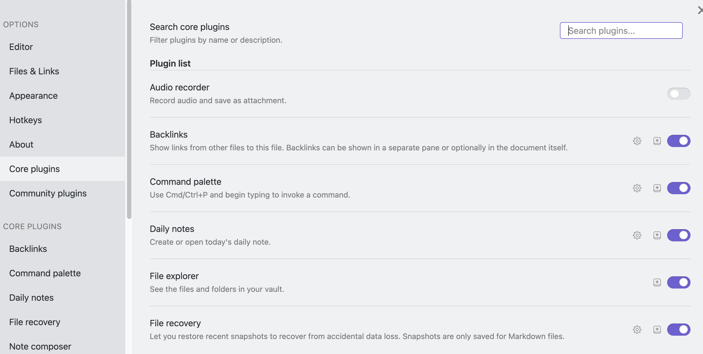
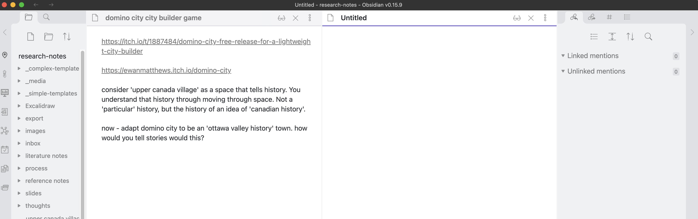
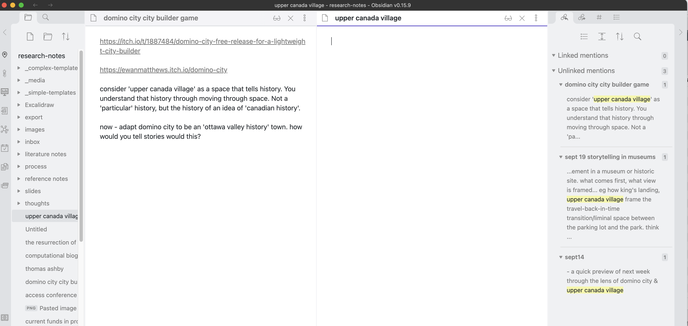
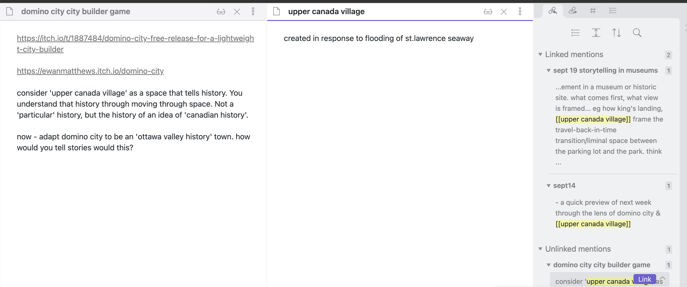
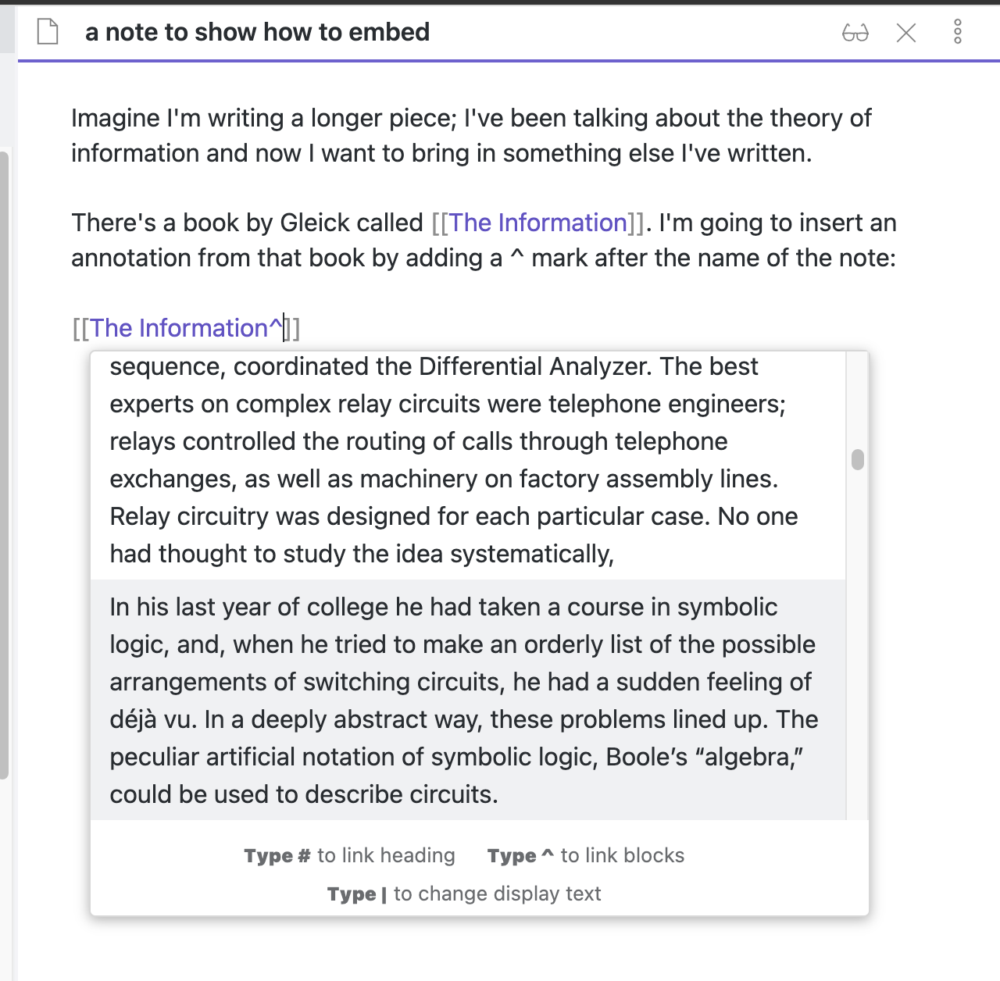
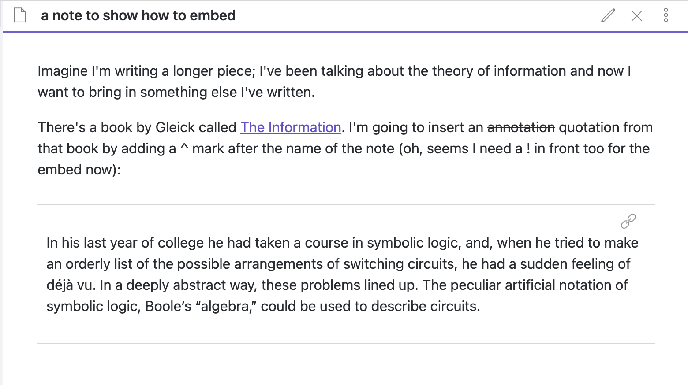

<!DOCTYPE html>
<html lang="en">
  <head>
    <meta charset="utf-8" />
    <meta name="viewport" content="width=device-width, initial-scale=1.0, maximum-scale=1.0, user-scalable=no" />

    <title></title>
    <link rel="stylesheet" href="dist/reveal.css" />
    <link rel="stylesheet" href="dist/theme/night.css" id="theme" />
    <link rel="stylesheet" href="plugin/highlight/zenburn.css" />
	<link rel="stylesheet" href="css/layout.css" />
	<link rel="stylesheet" href="plugin/customcontrols/style.css">


    <script defer src="dist/fontawesome/all.min.js"></script>

	<script type="text/javascript">
		var forgetPop = true;
		function onPopState(event) {
			if(forgetPop){
				forgetPop = false;
			} else {
				parent.postMessage(event.target.location.href, "app://obsidian.md");
			}
        }
		window.onpopstate = onPopState;
		window.onmessage = event => {
			if(event.data == "reload"){
				window.document.location.reload();
			}
			forgetPop = true;
		}

		function fitElements(){
			const itemsToFit = document.getElementsByClassName('fitText');
			for (const item in itemsToFit) {
				if (Object.hasOwnProperty.call(itemsToFit, item)) {
					var element = itemsToFit[item];
					fitElement(element,1, 1000);
					element.classList.remove('fitText');
				}
			}
		}

		function fitElement(element, start, end){

			let size = (end + start) / 2;
			element.style.fontSize = `${size}px`;

			if(Math.abs(start - end) < 1){
				while(element.scrollHeight > element.offsetHeight){
					size--;
					element.style.fontSize = `${size}px`;
				}
				return;
			}

			if(element.scrollHeight > element.offsetHeight){
				fitElement(element, start, size);
			} else {
				fitElement(element, size, end);
			}		
		}


		document.onreadystatechange = () => {
			fitElements();
			if (document.readyState === 'complete') {
				if (window.location.href.indexOf("?export") != -1){
					parent.postMessage(event.target.location.href, "app://obsidian.md");
				}
				if (window.location.href.indexOf("print-pdf") != -1){
					let stateCheck = setInterval(() => {
						clearInterval(stateCheck);
						window.print();
					}, 250);
				}
			}
	};


        </script>
  </head>
  <body>
    <div class="reveal">
      <div class="slides"><section  data-markdown><script type="text/template">

<!-- .slide: data-background-opacity="0.5" data-background-image="https://hist3812.netlify.app/images/illustrations/old-school-game-controller-vector.svg" -->

<div align="right">

# tech stuff

</div>
</script></section><section  data-markdown><script type="text/template">
- theory of atomic notes
- how this maps to digital structures
- what you should be keeping notes on
- how to submit stuff
</script></section><section  data-markdown><script type="text/template">
if time allows
- a quick tour through a variety of tools you might use for final essay
- finding allies for your final unessay
- a quick preview of next week through the lens of domino city & upper canada village
</script></section><section  data-markdown><script type="text/template">
## why making notes with obsidian is 'digital history'

-> b/c atomic notes lead to emergent structure

<aside class="notes"><ul>
<li>draw some networks!</li>
<li>network theory</li>
</ul>
</aside></script></section><section  data-markdown><script type="text/template">
## obsidian oh yeah

- &shy;<!-- .element: class="fragment" data-fragment-index="1" -->where does obsidian keep my stuff?
- &shy;<!-- .element: class="fragment" data-fragment-index="2" -->tour of the 'course handbook vault'
- &shy;<!-- .element: class="fragment" data-fragment-index="3" -->The [Obsidian Manual is at help.obsidian.md](https://help.obsidian.md/Obsidian/Index)
</script></section><section  data-markdown><script type="text/template">
## how do I make notes?

Generally, have three kinds of notes

- highlights & quotes 
- summary of a writer's thoughts 
- your original thoughts
</script></section><section  data-markdown><script type="text/template">
key thing - get in the habit of 'gardening'
- note making can be writing
- note making can be reading
- note making can be looking for connections
- note making can be refactoring long notes into smaller, linked notes
</script></section><section  data-markdown><script type="text/template">
## hypothesis

In the course handbook, there are instructions & a complex template (contains js code) to connect your hypothesis account to obsidian.

Once connected, you can annotate articles on the web, and obsidian will import the annotation as a note.
</script></section><section  data-markdown><script type="text/template">
## maybe templates can help

here are some templates you can use with the 'templates' core plugin (turn it on, create a folder, put templates in that folder, tell the plugin the name of that folder)
</script></section><section  data-markdown><script type="text/template">
a template for a note on the litearture

```yaml

'---
Title: PUT THE TITLE OF NOTE HERE
date: {{date}}
type: literature
project:
---'

(in the metadata block above, don't use the ` symbol)

#tag/#subtag

On pg ___ of link-to-reference-note it says ___

ie,
-   One idea per note - but as complete as possible in your own words
-   Write as if you are writing for someone else. Use full sentences
-   Include sources in the note, but the note should be understood even if you don't know the context it was taken from. The note should **stand by itself**
-   Be precise, clear and brief.}


### Citational Information

Link to a note with all relevant bib; sometimes called a 'literature note'.


### Related Links

{Use this section to think about connections. Think about **how the newly created notes connect with your existing knowledge**. If you find some connections, connect the new notes with the older notes already in your system.To find these, ask:

-   How does this idea fit into what I already know?
-   What does this idea mean for some other idea that I already have?
-   Does this add to, contradict, or explain another idea that I already have?

You link to other notes by putting them in square brackets. Remember that Obsidian will auto search as you type for notes with those words. Once you've selected a note, you can add the ^ symbol to link to a subheading or block within a note, too.}
```
</script></section><section  data-markdown><script type="text/template">
a template for a note summarizing an author's ideas

```yaml
`---
Title: [USE LN_AUTHOR_DATE]
date: {{date}}
type: reference
project:
---`

### Article title: 

Put the link to the article/resource here if you've got it (drag from zotero, for instance, or from the web); or full citation (you could used [zoterobib](https://zbib.org))

### Summary & Key Take Aways

*Here type up a 1-2 paragraph concise summary of the article. 

*If there are any key image you want to refer, you can include them here, drop them into the media folder, and then use the ![[]] format (just the filename).

*link to appropriate quotes or highlights if you got em eg notes made with the previous template*

### Links
Put any links to separate notes you have teased out here.
```
</script></section><section  data-markdown><script type="text/template">
a template for your own observations & original thoughts

```yaml

'---
Title: PUT THE TITLE OF NOTE HERE
date: {{date}}
type: permanent
project:
---''

#tag/#subtag <-use a descriptive tag here - not subjects, but rather, concepts you're interested in that you think this note might speak to

- a note containing your own thoughts, inspiration, reflection
- can be as simple as a link to a summary note, and asking, 'why?'
-   One idea per note - but as complete as possible in your own words
-   Write as if you are writing for someone else. Use full sentences
-   Include sources in the note, but the note should be understood even if you don't know the context it was taken from. The note should **stand by itself**
-   Be precise, clear and brief.

- Link to relevant literature-notes but remember, quotes are like salt: use sparingly
```
</script></section><section  data-markdown><script type="text/template">
## a bit about making links

just hit `[[` and start typing

- &shy;<!-- .element: class="fragment" data-fragment-index="1" -->basic outward links
- &shy;<!-- .element: class="fragment" data-fragment-index="2" -->discovering back links

</script></section><section  data-markdown><script type="text/template">
<split>
<p style="line-height: 0" class="reset-paragraph image-paragraph"></img></p>


<p style="line-height: 0" class="reset-paragraph image-paragraph"></img></p>

</split>
</script></section><section  data-markdown><script type="text/template">
<split>
<p style="line-height: 0" class="reset-paragraph image-paragraph"></img></p>

<p style="line-height: 0" class="reset-paragraph image-paragraph"></img></p>


</split>
</script></section><section  data-markdown><script type="text/template">
<p style="line-height: 0" class="reset-paragraph image-paragraph"></img></p>


</script></section><section  data-markdown><script type="text/template">
<p style="line-height: 0" class="reset-paragraph image-paragraph"></img></p>

</script></section><section  data-markdown><script type="text/template">
## submitting stuff

1. find your notes using windows explorer or mac finder
2. go to your github.com account & sign in
3. drag & drop the file onto your repository to upload; hit the green commit button
4. copy the URL to your repo/files and submit that on the google form

DO NOT DRAG AND DROP FROM THE OBSIDIAN INTERFACE. You're not grabbing the file; you're grabbing an internal obsidian formatted link that isn't useful to me.</script></section></div>
    </div>

    <script src="dist/reveal.js"></script>

    <script src="plugin/markdown/markdown.js"></script>
    <script src="plugin/highlight/highlight.js"></script>
    <script src="plugin/zoom/zoom.js"></script>
    <script src="plugin/notes/notes.js"></script>
    <script src="plugin/math/math.js"></script>
	<script src="plugin/mermaid/mermaid.js"></script>
	<script src="plugin/chart/chart.min.js"></script>
	<script src="plugin/chart/plugin.js"></script>
	<script src="plugin/menu/menu.js"></script>
	<script src="plugin/customcontrols/plugin.js"></script>

    <script>
      function extend() {
        var target = {};
        for (var i = 0; i < arguments.length; i++) {
          var source = arguments[i];
          for (var key in source) {
            if (source.hasOwnProperty(key)) {
              target[key] = source[key];
            }
          }
        }
        return target;
      }

	  function isLight(color) {
		let hex = color.replace('#', '');

		// convert #fff => #ffffff
		if(hex.length == 3){
			hex = `${hex[0]}${hex[0]}${hex[1]}${hex[1]}${hex[2]}${hex[2]}`;
		}

		const c_r = parseInt(hex.substr(0, 2), 16);
		const c_g = parseInt(hex.substr(2, 2), 16);
		const c_b = parseInt(hex.substr(4, 2), 16);
		const brightness = ((c_r * 299) + (c_g * 587) + (c_b * 114)) / 1000;
		return brightness > 155;
	}

	var bgColor = getComputedStyle(document.documentElement).getPropertyValue('--r-background-color').trim();

	if(isLight(bgColor)){
		document.body.classList.add('has-light-background');
	} else {
		document.body.classList.add('has-dark-background');
	}

      // default options to init reveal.js
      var defaultOptions = {
        controls: true,
        progress: true,
        history: true,
        center: true,
        transition: 'default', // none/fade/slide/convex/concave/zoom
        plugins: [
          RevealMarkdown,
          RevealHighlight,
          RevealZoom,
          RevealNotes,
          RevealMath.MathJax3,
		  RevealMermaid,
		  RevealChart,
		  RevealCustomControls,
		  RevealMenu,
        ],

		mathjax3: {
			mathjax: 'plugin/math/mathjax/tex-mml-chtml.js',
		},

		customcontrols: {
			controls: [
				{id: 'toggle-overview',
				title: 'Toggle overview (O)',
				icon: '<i class="fa fa-th"></i>',
				action: 'Reveal.toggleOverview();'
				},
			]
		},
		menu: {
			loadIcons: false
		}
      };

      // options from URL query string
      var queryOptions = Reveal().getQueryHash() || {};

      var options = extend(defaultOptions, {"width":960,"height":700,"margin":0.04,"controls":true,"progress":true,"slideNumber":true,"transition":"slide","transitionSpeed":"default"}, queryOptions);
    </script>

    <script>
      Reveal.initialize(options);
    </script>
  </body>
</html>
